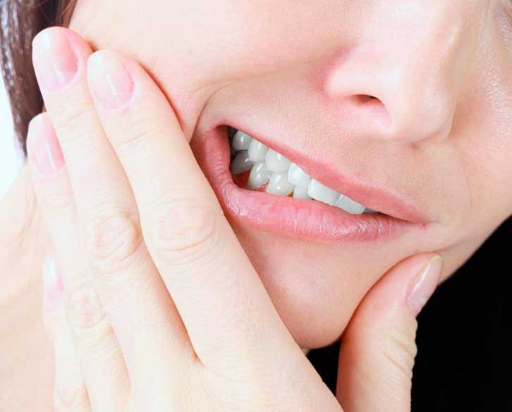

For most people, the basics of good dental hygiene are taught from a very early age – and with good reason. Teeth serve multiple purposes, all of which are important to varying degrees. A person’s ability to masticate is perhaps the primary reason for teeth, as it helps make the digestion of food possible. One’s appearance, from their smile to the shape of their face, is also dependent on their teeth. As useful and important as teeth are, however, they are not indestructible. In fact, they are susceptible to a number of problems that can potentially result in their loss. Fortunately, these problems are often preventable if a person adheres to good dental habits. To develop these habits, it is important to understand what the potential threats are and how to avoid them.
Bad Breath
Halitosis, which is commonly known as bad breath, is a problem in which a person’s breath has an unpleasant or foul odor. Problems with bad breath may be caused by a number of things, such as lingering food particles in the mouth, recently eaten malodorous food items, dryness of the mouth, poor dental hygiene, mouth infections, or illness. Resolving bad breath is dependent on its cause. For some, bad breath may be resolved by simply brushing the teeth to remove plaque buildup and brushing the tongue with a toothbrush or tongue scraper to remove bacteria. When dental disease or infection is the source, treatment by a dentist may be necessary. Good dental hygiene is also an important part of preventing bad breath. In addition, toothbrushes should be replaced every three months, and people should schedule regular dental exams and cleanings. Bad breath caused by dry mouth may be prevented by chewing on gum or drinking water at regular intervals.
Gum Disease
The gums are the tissue inside the mouth that serves as support for the teeth. When they become infected due to toxins produced by plaque, it is called periodontal disease, commonly known as gum disease. There are two basic types of gum disease: gingivitis and periodontitis. Of the two, gingivitis is a milder form and is reversible. When people have gingivitis, they may notice that their gums are red and swollen, and at times, there may be some bleeding. Periodontitis occurs when gingivitis is left untreated. It is an advanced stage of gum disease in which plaque spreads beyond the gum line. When a person has this type of gum disease, bacteria can cause deterioration of the gums and destruction of tooth-supporting bones. In addition, it can lead to loose teeth and/or tooth loss.
Prevention is key when it comes to gum disease. Proper brushing and flossing techniques to remove plaque and bacteria are important. Teeth should be brushed after meals, and one should floss between the teeth at least once a day to remove hidden debris and plaque. People with certain health conditions, such as diabetes, should talk with their dentist about their health and the risk of gum disease. Proper maintenance of these health conditions may also help reduce the risk of gum disease. Treatment of gum disease ranges from non-surgical procedures to treatments that require surgery. Surgical procedures include gum graft surgery and periodontal pocket reduction. Non-surgical treatments include scaling and root planing and antibiotics to treat any infection.
Tooth Sensitivity
The sensitive nerves of the teeth are covered by a layer called dentin. Dentin may become exposed due to factors such as receding gums and/or gum disease, age, overzealous brushing, or even tooth-whitening products. Once the dentin exposure happens, a person can experience irritation or pain from eating foods that are sweet, hot, cold, or acidic. Even breathing in very cold air can cause pain. This is a condition that is called tooth sensitivity. The pain that people feel is due to the many microscopic channels in the dentin that lead to the inner part of the tooth called the pulp. A tooth’s pulp is made up of nerves and blood vessels. When the dentin is exposed, the nerves become irritated when certain foods are eaten.
Fortunately, tooth sensitivity is preventable with good oral care. By properly brushing with a soft-bristled toothbrush, flossing one’s teeth, and reducing the consumption of acidic and sugary foods, it is possible to prevent the recession of gums that leads to sensitivity. If sensitivity of the teeth is already a problem, treatment is required. A dental appointment will be necessary to determine the actual cause of the sensitivity. Treatment may involve at-home solutions, such as using a fluoride rinse or brushing with a desensitizing toothpaste or a high-fluoride toothpaste. In-office treatments may include fluoride varnishes over the root surface, fillings to cover the exposed roots, or the use of plastic resin or dentin sealers.
Yellow Teeth
Tooth discoloration, or yellowing of the teeth, is a condition in which the teeth become stained or discolored. There are numerous potential causes for tooth yellowing, including excess fluoride, plaque and/or tartar buildup, aging, smoking, medications, or certain types of food. Preventing yellowing of the teeth is not always possible, particularly when it is associated with genetics. For other people, yellowing may be prevented by avoiding certain foods that are acidic or foods that are high in tannins and that may stain the teeth, or by making changes in lifestyle such as quitting smoking. Having the teeth cleaned every six months by a dental hygienist may also help to prevent teeth from turning yellow. To treat this problem, a person may see their dentist about in-office teeth-whitening procedures. Over-the-counter teeth-whitening is also an option for many. Other options to discuss with a dentist are veneers or dental bonding for a more improved appearance.
Tooth Decay
When plaque forms on the teeth, it produces acids. These acids, which are sticky, adhere to the teeth and attack the enamel. If not properly removed, the plaque can damage the tooth enamel. This condition is called tooth decay, and if it is left untreated, it can result in cavities, or small holes in the teeth. According to the University of Chicago Medicine, tooth decay is a disease that is so prevalent that only the common cold is more common. Tooth decay is caused by improper brushing or failure to regularly brush one’s teeth, health conditions such as diabetes, consuming sugary foods, dry mouth, and smoking. Lack of fluoride also contributes to dental decay.
Tooth decay is highly preventable with basic oral maintenance, such as flossing daily and brushing the teeth for two minutes following every meal or, at minimum, twice a day. When brushing one’s teeth, a fluoride toothpaste is important, as the fluoride helps teeth resist decay by hardening the enamel. Treatment of mild tooth decay may be resolved by improving one’s habits in terms of dental hygiene and the use of a daily fluoride mouth rinse. If tooth decay has led to the formation of cavities, it may require treatment based on its severity. Treatment options include removing the decay and filling the hole with a dental filling, replacing a part of the tooth with a crown, or removing infected pulp during a procedure known as a root canal. Tooth decay may become so bad that these treatment options are not viable. When this is the case, the dentist may suggest removing the tooth altogether.
Tooth Erosion
Tooth enamel is the hardest substance in the human body; however, acids from bacteria and certain food and drink are corrosive and can begin to wear away tooth enamel. When this happens, it is called tooth erosion. In addition to bacteria and acidic food and drink such as sodas and juices, tooth erosion may also be caused by digestive problems such as vomiting, as stomach acid is highly corrosive. This is particularly problematic for people who suffer from disorders or illnesses that cause frequent bouts of vomiting. Tooth erosion may be exacerbated by dry mouth, as saliva works to neutralize teeth-corroding acids in the mouth.
Brushing with a soft-bristled toothbrush after eating and drinking is only the first step in preventing tooth erosion. Eating a slice of cheese or drinking milk can help to neutralize acids in the mouth. Reducing the amount of acidic drinks consumed is also a major preventative step. Saliva may also be stimulated by chewing a stick of gum. When buying chewing gum, sugar-free gums that contain xylitol are most effective and safest for the teeth.
Mouth Sores
There are various types of sores that can appear on the gums, tongue, inner cheeks, lips, or at the bottom of the mouth. They can range from mild sores that appear due to irritation, such as biting one’s cheek, to more serious sores that are indicative of illness such as cancer of the mouth. The most common sores of the mouth include canker and cold sores. Canker sores are non-contagious and may be caused by hormone changes, stress, a weakening of the immune system, certain health conditions, or a lack of vitamins such as iron or B12. These types of sores are more common in women than in men and have a yellowish appearance with a white center and a red outer ring. Herpes simplex virus causes cold sores that, unlike canker sores, are highly contagious. These sores only appear on the mouth when triggered by stress, exposure to the sun, hormone changes, or fever and illness. This type of sore starts off as blister clusters before crusting over.
Prevention of mouth sores depends on the type of sore. People who frequently get sores from bites to the inner cheek can prevent them by chewing more slowly and carefully. Using care when drinking hot foods can help prevent sores from burns. Canker and cold sores may be prevented by reducing stress, which is a trigger for both. Antiviral medications may also be given to help prevent cold sores from appearing.
Treating simple sores that occur due to irritation typically involves soothing the irritation. A person may take over-the-counter pain relievers or gargle with cool or salt water. Canker sores may be treated by applying a paste of baking soda and water. Icing cold sores and using over-the-counter creams and drying agents may also be helpful. A doctor should be seen if it is a new sore with no apparent cause if the sore is accompanied by fever, difficulty swallowing, or drooling. Sores that last for several weeks should also be seen by a doctor. Treatment by medical professionals depends on the type of sore and its severity.
Toothaches
Pain that radiates from the teeth is called a toothache. There can be several causes for a toothache; however, one of the most common is caused by an inflammation of the pulp called pulpitis. Pulpitis is a result of tooth decay and cavities. Toothaches may also be caused by other problems, such as a wisdom tooth erupting, gum infections, or cracked or otherwise damaged teeth.
A toothache can be prevented when a person takes the steps to prevent tooth decay and cavities. This includes brushing and flossing regularly and eating a healthy diet. If a person has a toothache, they should consult a dentist to determine the exact cause. This is important, as a toothache that lasts could indicate that the tooth is dying and require immediate action. A toothache that is accompanied by swelling or fever could also indicate infection that may spread. Dentists treat toothaches according to the underlying cause. Treatment may range from antibiotics to tooth extraction.